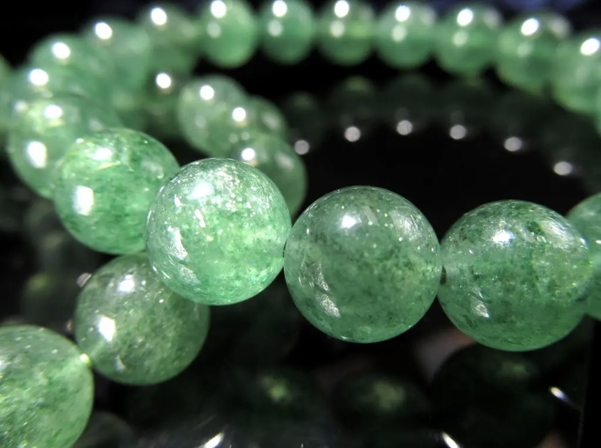
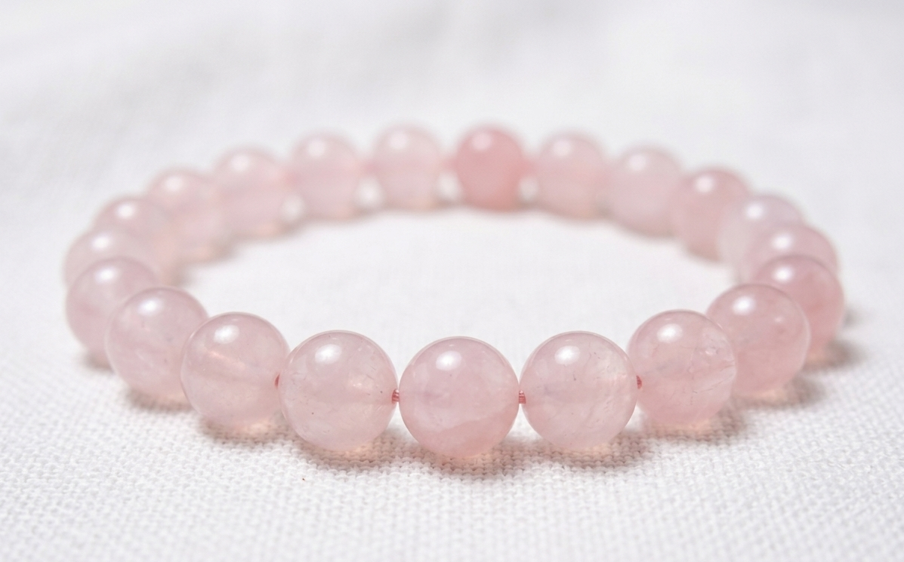

3つのプラン
おすすめ
運命を動かすプラン
2027年3月の節目を、整った自分で迎えたい方へ
59,800円




アクアマリン
グリーンアベンチュリン
スモーキークォーツ
ローズクォーツ
期待できる変化
- リハの待合室で彼を待つ間も、
胸のざわつきが静まっている - 会った帰り道、「迷惑じゃなかったかな」ではなく
「今日も話せてよかった」と思える - 2027年3月の転機を、
短く素直な感謝を渡せる最高の状態で迎えられる
特典：月1回のオーラメンテナンス相談（3ヶ月間）、
浄化用水晶クラスター、水晶さざれ

 ※上記4種類の石から最高のバランスを考えて、
※上記4種類の石から最高のバランスを考えて、
1つ、もしくは2つのブレスレットをお届けします
浄化用水晶クラスター、水晶さざれ
1つ、もしくは2つのブレスレットをお届けします
流れを整えるプラン
まずは心を安定させたい方へ
39,800円
アクアマリン
グリーンアベンチュリン
ローズクォーツ
期待できる変化
- 診察やリハの前の夜も、
気持ちの波が静まっていく - 彼の返事の短さに
振り回される回数が、少しずつ減っていく
特典：浄化用水晶さざれ
※上記3種類の石から
バランスを考えたブレスレット1本をお届けします
※上記3種類の石から
バランスを考えたブレスレット1本をお届けします
日々のお守りプラン
まずは夜の「迷惑かな」を和らげたい方へ
19,800円
アクアマリン
スモーキークォーツ
期待できる変化
- 眠る前に浮かぶ不安が、
深呼吸一つで静まっていく
特典：浄化用水晶さざれ
※上記2種類の石から
バランスを考えたブレスレット1本をお届けします
※上記2種類の石から
バランスを考えたブレスレット1本をお届けします